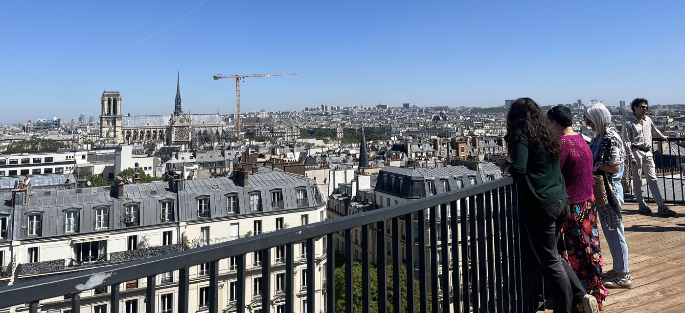
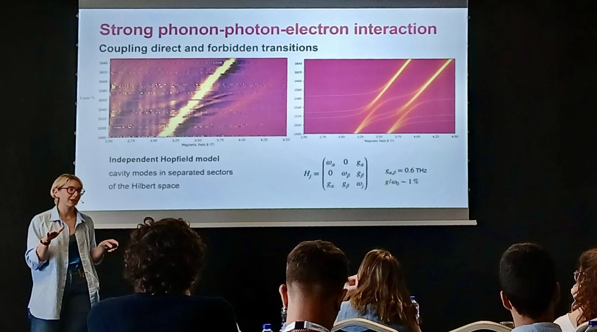
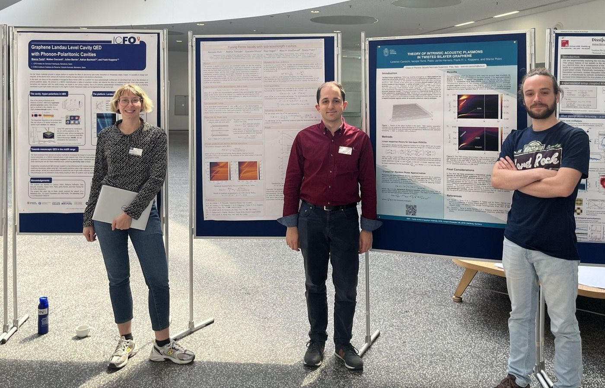
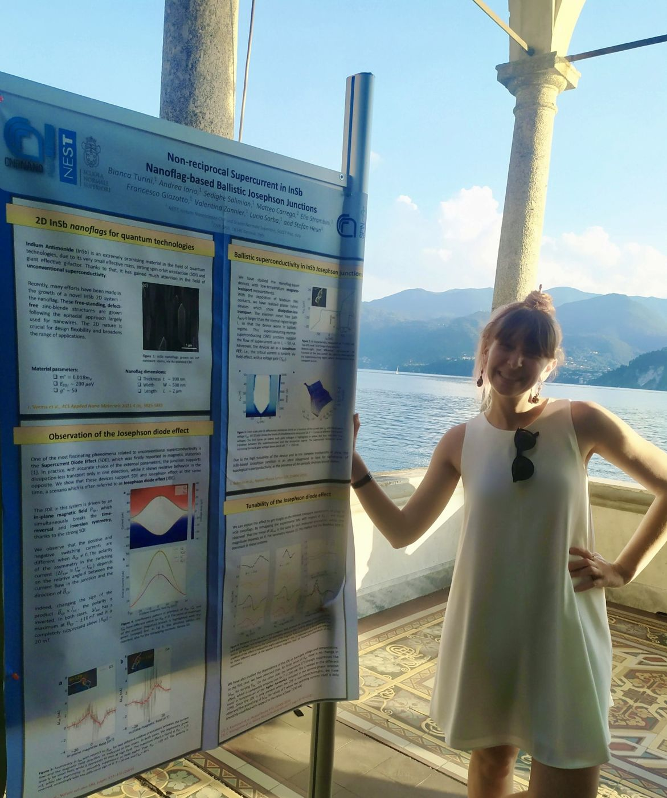

01About
I am a
“la Caixa” Foundation fellow
at ICFO, working in the
Quantum Nano-Optoelectronics
group led by Prof. Frank Koppens and co-supervised by Prof. Adrian Bachtold
(Quantum NanoElectronics and NanoMechanics).
My research focuses on cavity quantum electrodynamics in two-dimensional materials.
I use deep-subwavelength phonon-polariton cavities in hexagonal boron nitride to confine
light to the nanoscale and engineer its coupling to correlated electron systems,
which I investigate through transport.
I am a Normalista, an alumna of the Scuola Normale Superiore in Pisa, one of Italy’s most selective academic institutions. Outside the lab, I am an active member of ICONS (ICFO’s Optica, SPIE, and EPS student chapter) and co-founder of the Nanofabrication Seminar Series.
02News
- Invited for a one-week research visit to the Collège de France in Paris, hosted by Dr. Gian Marcello Andolina.

View from the Collège de France terrace. - Our paper on graphene Landau levels in a hyperbolic phonon-polariton cavity is out in Physical Review Research.
- My poster at Frontiers of Cavity Quantum Electrodynamics in Paris received an Honorable Mention — watch the interview.
- Invited talk at FisMat 2025, the Italian condensed matter physics conference, in Venice.
- Invited talk at the Collège de France, Paris, hosted by Prof. Marco Schirò.
- Started my PhD at ICFO as a “la Caixa” INPhINIT fellow.

03Publications
04Talks & Posters
Talks
-
Hyperbolic cavity electrodynamics with graphene electrons in the quantum Hall regime
QUANTUMatter 2026 — Barcelona, Spain
Speaking at QUANTUMatter 2026, Barcelona. -
Invited talk
Graphene quantum Hall electrodynamics in deep-subwavelength phonon-polariton cavities
FisMat 2025 — Ca’ Foscari University, Venice, Italy -
Invited talk
Graphene quantum Hall electrodynamics in deep-subwavelength phonon-polariton cavities
Collège de France — Paris, France · Hosted by Prof. Marco Schirò -
Exploring cavity-induced effects in 2D quantum materials
APS March Meeting 2024 — Minneapolis, USA

Posters
-
★ Honorable Mention
Forbidden Landau-level transitions and mode hybridization via phonon-polariton nanocavities
Frontiers of Cavity Quantum Electrodynamics, Rice Center for Cavity QED — Paris, France(a) At the poster. (b) The polariton dance with Prof. Jun Kono & team. (c) Conference group photo. -
Graphene quantum Hall electrodynamics in deep-subwavelength phonon-polariton cavities
Gordon Research Conference: Topological and Correlated Matter — Castelldefels, Spain -
Graphene Landau level cavity QED with phonon-polaritonic cavities
Challenges and perspectives in resonator-mediated quantum many-body physics, ETH Zürich — Zürich, Switzerland -
Graphene Landau level cavity QED with phonon-polaritonic cavities
Workshop: Cavity Control of Quantum Materials, CFEL / DESY — Hamburg, Germany
With my theory collaborators from Pisa at the poster session.


Schools
-
Optomechanics & Nanophononics
Spring school, École de Physique des Houches — Les Houches, France -
Quantum Fluids of Light and Matter
International School of Physics “Enrico Fermi” — Varenna, Italy
Poster: Non-reciprocal supercurrent in InSb nanoflag-based ballistic Josephson junctions
My very first poster presentation, in such a beautiful place.

05Education
- PhD in Photonics
ICFO & Universitat Politècnica de Catalunya
“la Caixa” INPhINIT doctoral fellowship - Research stay
Laboratoire de Physique de l’École Normale Supérieure (LPENS), Paris
Hybrid Quantum Circuits group of Takis Kontos
Project: 2.5D GHz cavities for cavity-integrated quantum materials - M.Sc. in Physics and Nanoscience
Scuola Normale Superiore, Pisa
Thesis: Josephson diode effect in high-mobility InSb nanoflags — NEST Laboratory, groups of Stefan Heun and Francesco Giazotto - B.Sc. in Physics
University of Pisa
Thesis: development of a low-cost eye tracker for EEG experiments with visual stimuli — NEST Laboratory, group of Gian Michele Ratto
06Expertise
- Electromagnetic simulations of nanocavities (COMSOL Multiphysics, Tidy3D)
- Van der Waals heterostructure assembly (graphene, hBN) by dry transfer · electron-beam and optical lithography · reactive-ion etching · metal deposition · cleanroom processing · nano‑characterization
- Quantum transport · cryogenics · quantum Hall magnetotransport · near-field optical microscopy · phototransport · Josephson junctions and supercurrent spectroscopy
07Service
- ICONS — ICFO Student Chapter
Secretary (current) · formerly President - Nanofabrication Seminar Series
Co-founder - SCOP24 — Student Conference in Optics and Photonics
Co-organiser with ICONS, the ICFO student chapter · Secretary of the organising committee — ICFO, Castelldefels - Diversity & Inclusion Committee
Member, ICFO